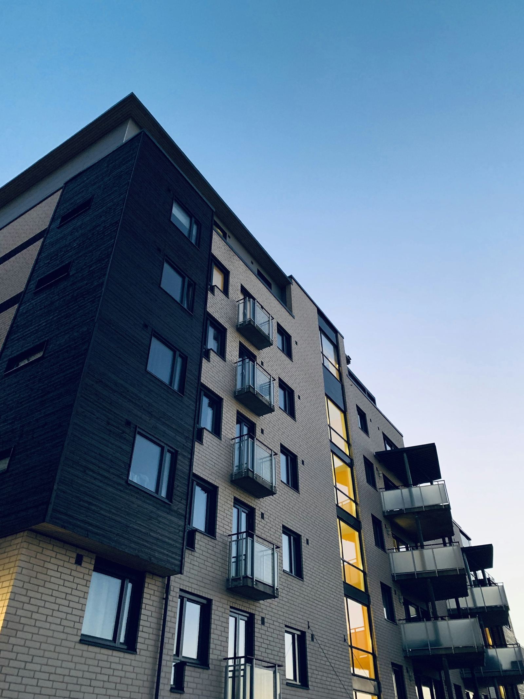

Fastighetsservice för föreningar och fastighetsägare
Löpande skötsel, underhåll, utemiljö och snöröjning med en kontaktperson för hela fastigheten.
Det här kan vi ta hand om
Vi går igenom fastigheten tillsammans med styrelsen eller förvaltaren och kommer överens om vad som ska göras, hur ofta och till vilket pris. Det som upptäcks vid våra besök och som ingår i avtalet åtgärdar vi direkt. Annat rapporterar vi till er med ett förslag.
- Tillsyn och rondering
- Skötsel av trapphus, entréer, tvättstugor och andra gemensamma utrymmen
- Gräsklippning, häckar, planteringar och lövhämtning
- Snöröjning, halkbekämpning och takskottning
- Reparationer, måleri och snickeri
- Planerat underhåll av fasader, fönster, tak och förråd

Exempel på ett år
Så här kan arbetet fördelas över året. Innehållet bestäms utifrån er fastighet och ert avtal.
| Period | Utemiljö | Fastighet | Vinter |
|---|---|---|---|
| Januari–mars | – | Tillsyn, genomgång av underhållsplanen | Snöröjning, halkbekämpning, takskottning |
| April–maj | Sandupptagning, vårstädning, plantering, första gräsklippningen | Översyn av tak, hängrännor och fasad | – |
| Juni–augusti | Gräsklippning, häcktrimning | Utvändigt måleri och underhåll | – |
| September–november | Beskärning, lövhämtning, höststädning | Rensning av hängrännor, invändigt underhåll | Förberedelser inför vintern |
| December | – | Tillsyn | Snöröjning, halkbekämpning |
Olika sätt att anlita oss
Löpande avtal
Återkommande skötsel och tillsyn med en bestämd omfattning och ett fast pris per månad.
Säsongsavtal
Utemiljön på sommaren och snöröjningen på vintern, med överenskommen prioritering av ytor.
Enskilda uppdrag
Reparationer och projekt ur underhållsplanen, till fast pris eller på löpande räkning.
Kontakta oss för en kostnadsfri offert
Berätta vad du behöver hjälp med, så återkommer vi med ett pris och ett förslag på när vi kan börja.